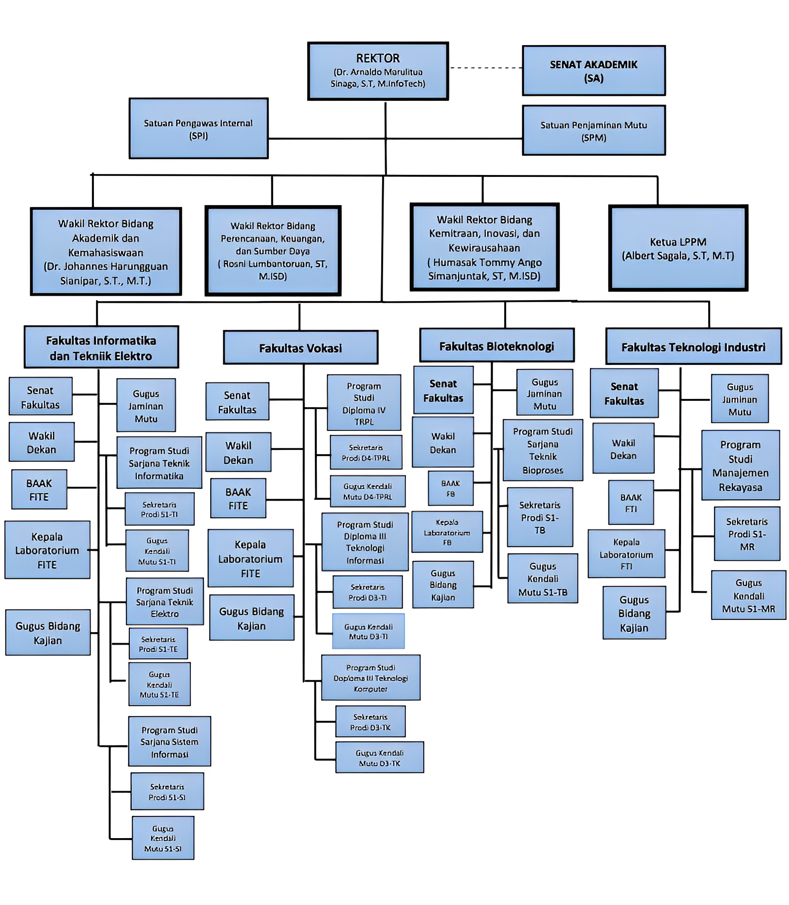

Institut Teknologi Del
Tentang Del
Program Pendidikan
Sivitas
Mahasiswa
Tentang Del
Sejarah
Visi dan Misi
Fasililtas
Akreditasi
Berita
Testimonial
Program Pendidikan
Fakultas Vokasi
Fakultas Informatika dan Teknik Elektro
Fakultas Teknik Industri
Fakultas Bioteknologi
Sivitas
Lembaga
Pembina
Rektor
Dosen
Staff
Alumni
Mahasiswa
Beasiswa
Prestasi Mahasiswa
Badan Eksekutif Mahasiswa
Majelis Permusyawaratan Mahasiswa
Unit Kegiatan Mahasiswa
Akses Cepat
Campus Information System
ECourse IT Del
Seleksi Penerimaan Mahasiswa Baru
Onine Library Information System
Previous
Next
Lembaga
Struktur Organisasi Institut Teknologi Del

Senat Akademik
Rektor
Satuan Pengawas Internal
Satuan Penjaminan Mutu
Wakil Rektor Bidang Akademik dan Kemahasiswaan
Direktorat Pendidikan
Biro Administrasi Akademik
Lembaga Kemahasiswaan
Wakil Pengembangan Prestasi Mahasiswa
Wakil Pengembangan Karakter Mahasiswa
Pusat Pembinaan Keasramaan
Pusat Pengembangan Karir dan Alumni
Wakil Bidang Tracer Study
Wakil Bidang Hubungan Industri
UPT Bahasa
UPT Perpustakaan
Direktorat Teknologi dan Informasi
Divisi Sistem Informasi dan Digital Content
Divisi Keamanan dan QA
Divisi Infrastruktur
UPT PP ESTEM
Divisi Pelatihan
Divisi Penelitian
Divisi Kerjasama
UPT Pembelajaran Sains dan Matematika
Wakil Rektor Bidang Perencanaan, Keuangan, dan Sumber Daya
Pusat Perencanaan
Direktorat Keuangan dan Akuntansi
Biro Administrasi Umum
Pusat Logistik
Pusat Modal Manusia
Direktorat Fasilitas
UPT Kantin
Keamanan dan Keselamatan
Pertamanan
Sarana dan Prasarana
Transportasi
UPT Klinik
Wakil Rektor Bidang Kemitraan, Inovasi, dan Kewirausahaan
Divisi Kemitraan dan Hubungan Masyarakat
Divisi Taman Science Pollung
Divisi Inovasi dan Kewirausahaan
UPT Inkubator Bisnis
Sentra HAKI
Lembaga Penelitian dan Pengabdian kepada Masyarakat
Fakultas Vokasi
Senat Fakultas
Wakil Dekan
Gugus Jaminan Mutu
BAAK Vokasi
Kepala Laboratorium Vokasi
Gugus Bidang Kajian
Program Studi Sarjana Terapan Teknologi Rekayasa Perangkat Lunak
Sekretaris Prodi STr-TRPL
Gugus Kendali Mutu STr-TRPL
Program Studi Diploma 3 Teknologi Informasi
Sekretaris Prodi D3-TI
Gugus Kendali Mutu D3-TI
Program Studi Diploma 3 Teknologi Komputer
Sekretaris Prodi D3-TK
Gugus Kendali Mutu D3-TK
Fakultas Informatika dan Teknik Elektro
Senat Fakultas
Wakil Dekan
Gugus Jaminan Mutu
BAAK FITE
Kepala Laboratorium Informatika dan Teknik Elektro
Gugus Bidang Kajian
Program Studi Sarjana Informatika
Sekretaris Prodi S1-IF
Gugus Kendali Mutu S1-IF
Program Studi Sarjana Sistem Informasi
Sekretaris Prodi S1-SI
Gugus Kendali Mutu S1-SI
Program Studi Sarjana Teknik Elektro
Sekretaris Prodi S1-TE
Gugus Kendali Mutu S1-TE
Fakultas Teknik Industri
Senat Fakultas
Wakil Dekan
Gugus Jaminan Mutu
BAAK FTI
Kepala Laboratorium Teknik Industri
Gugus Bidang Kajian
Program Studi Manajemen Rekayasa
Sekretaris Prodi S1-MR
Gugus Kendali Mutu S1-MR
Program Studi Teknik Metalurgi
Sekretaris Prodi S1-TM
Gugus Kendali Mutu S1-TM
Fakultas Bioteknologi
Senat Fakultas
Wakil Dekan
Gugus Jaminan Mutu
BAAK FB
Kepala Laboratorium Bioteknologi
Gugus Bidang Kajian
Program Studi Teknik Bioproses
Sekretaris Prodi S1-TB
Gugus Kendali Mutu S1-TB